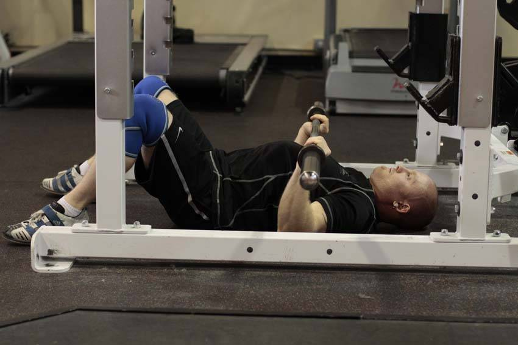

- Adjust the j-hooks so they are at the appropriate height to rack the bar. Begin lying on the floor with your head near the end of a power rack. Keeping your shoulder blades pulled together; pull the bar off of the hooks.
- Lower the bar towards the bottom of your chest or upper stomach, squeezing the bar and attempting to pull it apart as you do so. Ensure that you tuck your elbows throughout the movement. Lower the bar until your upper arm contacts the ground and pause, preventing any slamming or bouncing of the weight.
- Press the bar back up as fast as you can, keeping the bar, your wrists, and elbows in line as you do so.
This exercise appears in Programmd training programs. Take the quiz to find one for your gym.
Find your program